BANGING MY HEAD AGAINST THE LANGUAGE BARRIER
~(aka. attempting to learn Mandarin Chinese)
VOCABULARY: Clothing
衣服（yī fú) - Clothing
穿（chuān) - (v) to put on; to wear
-
NOTE: THIS IS ONLY USED FOR CLOTHING, NOT ACCESSORIES.
-
Ex: 今天我穿了一件毛衣，一条裤子，和一双运动鞋。
(Wǒ chuānle yī jiàn máoyī, yī tiáo kùzi, hé yī shuāng yùndòngxié.)
-
Today I am wearing a sweater, a pair of pants, and a pair of running shoes.
TOPS
件(jiàn)
- measure word for (clothing) tops and general pieces of clothing (衣服)
-
衬衫(chèn shān)
- (n) shirt, formal shirt, blouse

-
短袖(Duǎn xiù)
- (n) short-sleved shirt
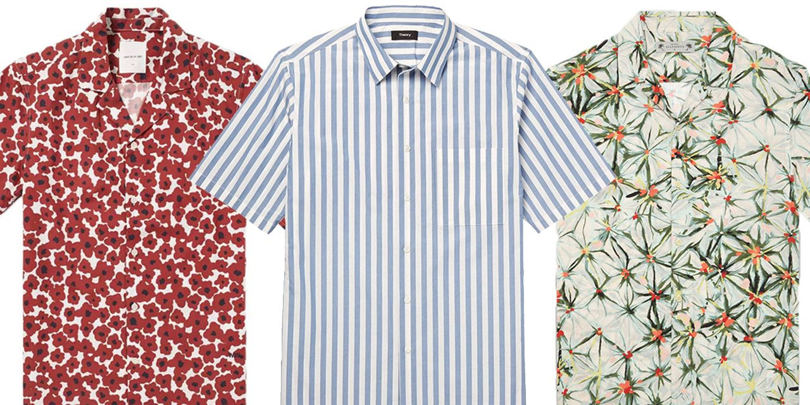
-
体恤衫(tǐxùshān)
- (n) T-shirt
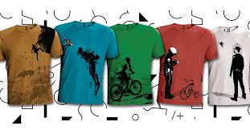
-
毛衣(máoyī)
- (n) sweater
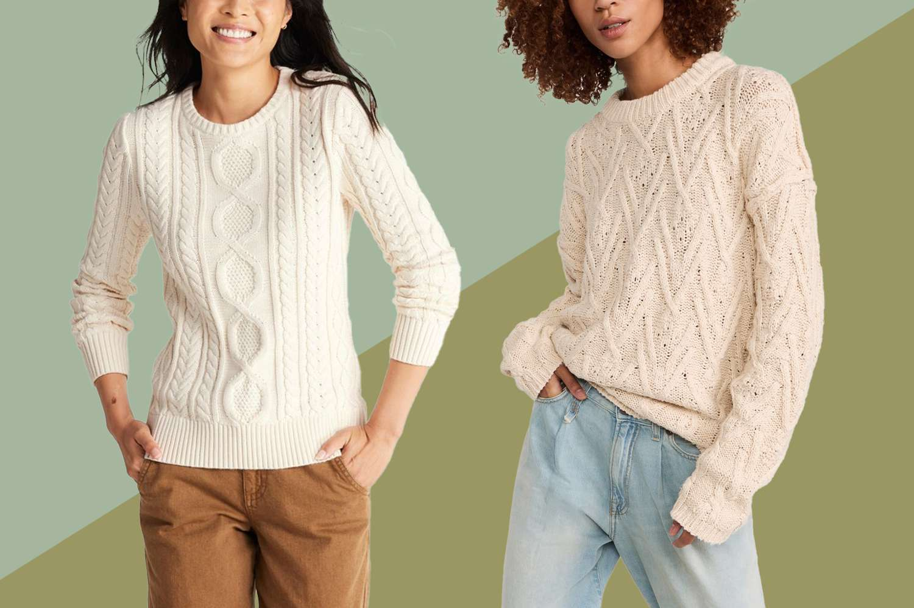
-
卫衣(wèiyī)
- (n) hoodie
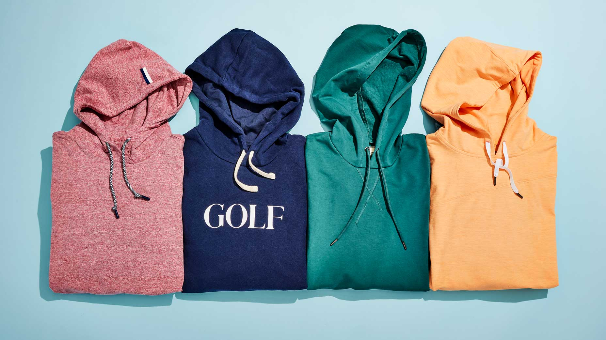
-
外套(wàitào)
- (n) coat, jacket

-
大衣(dàyī)
- (n) overcoat (the longer, fancier kind of coats)
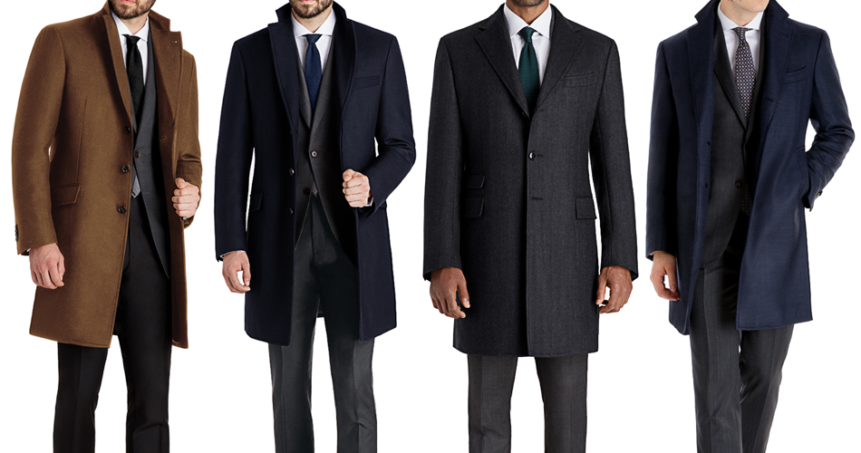
-
夹克(jiākè)
- (n) jacket (the shorter kind that only covers the torso)
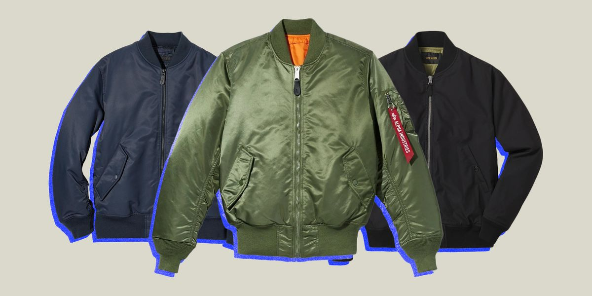
-
雨衣(yǔyī)
- (n) raincoat
BOTTOMS
条(tiáo) - measure word for long, thin, clothes (basically clothes worn around the lower part of the body)
-
裤子(kùzi)
- (n) pants
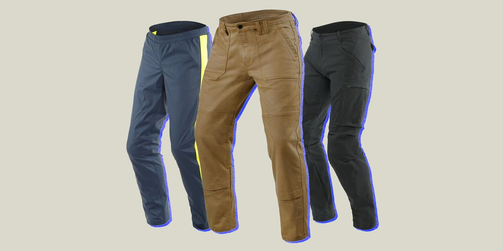
-
裙子(qúnzi)
- (n) skirt
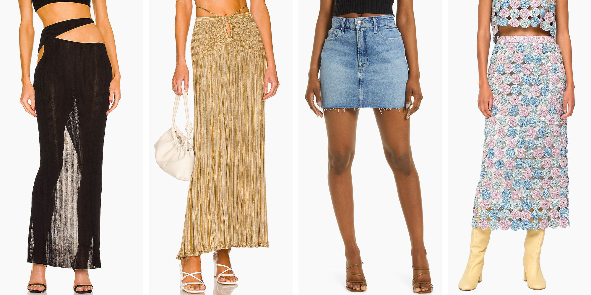
SHOES
双(shuang)
- measure word for *PAIRS*
-
鞋子(xiézi)
- (n) shoes
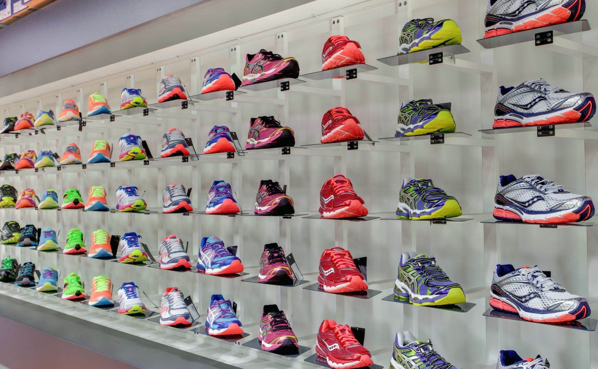
-
运动鞋(yùndòngxié)
- (n) sneakers, running shoes
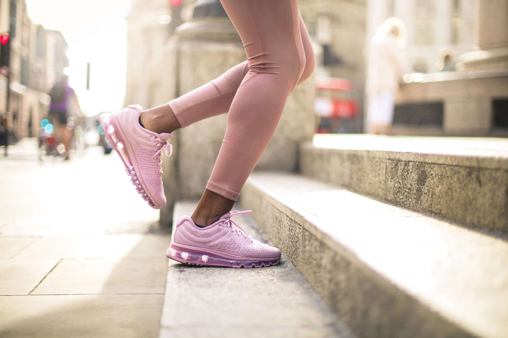
-
球鞋(qiúxié)
- (n) tennis shoes
-
皮鞋(píxié)
- (n)leather shoes, dress shoes
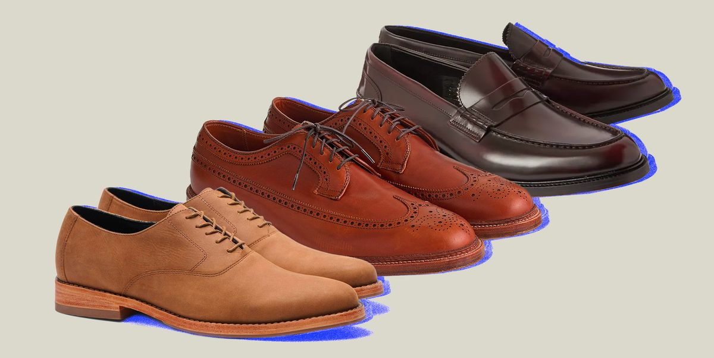
-
雨鞋(yǔxié)
- (n)rainboots
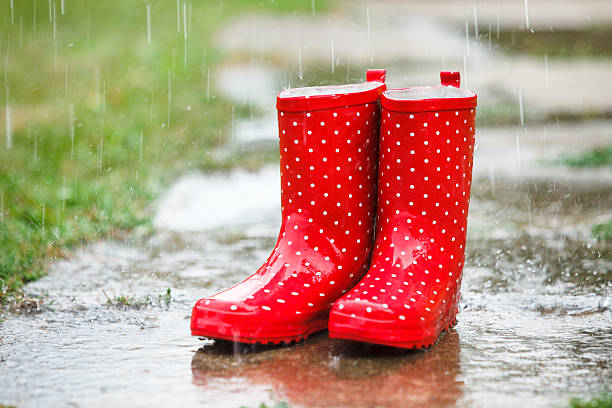